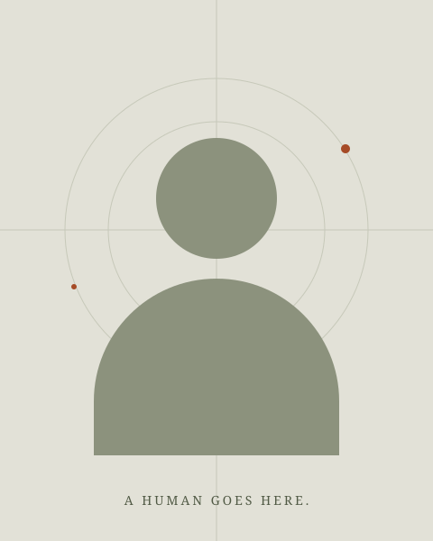

EARTHLING · STUDENT · WORK IN PROGRESS
Tiancheng
Ma. 马天成
A curious mind.
A gravitational attraction
to beautiful things.
Born in Inner Mongolia. Studying in Germany.
Somewhere between a butterfly’s dream
and the edge of a black hole.
A PERSONAL LAW OF GRAVITY
“I love beautiful things with a depth
that carries me beyond the event horizon—
past the possibility of return.”
TIANCHENG MA · A METAPHOR, NOT A PEER-REVIEWED EQUATION.
A little context.
A lot of cosmos.
Hi, I’m Tiancheng. Oder einfach: Tiancheng.
My story begins in Inner Mongolia and currently continues in Germany, where I’m studying, learning German, and finding my own way through the world.
I’m drawn to questions that stay with you: how to live freely, why the universe is so strange, and why some beautiful things refuse to leave your mind.

THE OBSERVERTry a portrait ↗
This preview stays in this tab. To publish your portrait, see the photo guide.
天地很大。
不妨，逍遥一点。
如果人生一定要有一个方向，
我希望是：向着自由，也向着好奇。
读庄子，让我着迷的不是逃离世界，而是换一种眼光看它。不急着给万物下定义，也不急着把自己活成某个标准答案。
蝴蝶的梦提醒我：确信之外，还有想象。逍遥的意味，于我而言，是认真生活，也给心留一点不被功利占满的地方。
We go
way back.
We’re made of star stuff.
Some assembly required.
The carbon and oxygen in our bodies were forged in stars. Our hydrogen has an even older origin: the Big Bang. So, in a very material sense, meeting someone is the universe rearranging itself to say hello.
Billions of years of cosmic history.
Still occasionally forgetting a German article.
04 / AN EXTREMELY EARLY CAMPAIGN
First, fluent German.
Then, Bürgermeister.
One day, I’d like to run for mayor in Germany.
For now, the campaign begins with mastering der, die, das.
Große Träume. Noch größere Grammatik.
*A little encouragement, not an actual election. No votes are collected.